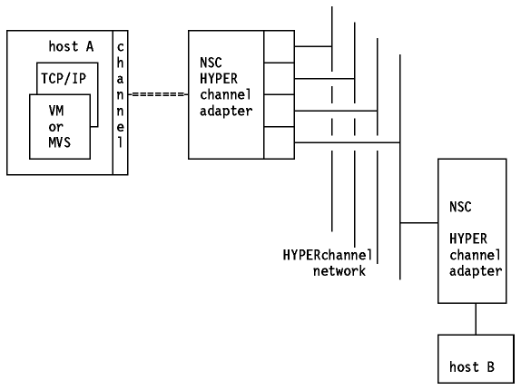

Table of Contents
Table of Contents  3172
TCP/IP Offload
3172
TCP/IP OffloadTable of Contents 3172
TCP/IP Offload
HYPERchannel A is a 50 Mbps, baseband, CSMA with collision avoidance network using a coaxial bus cable. Each network adapter can control up to four trunks (coaxial cable). It is used to interconnect large mainframe computers and high-speed peripherals. This adapter has to be connected to a BLKMPXR channel. It appears as a 64-address control unit to the operating system.
Both TCP/IP for VM and TCP/IP for MVS support HYPERchannel Series A devices. In addition, TCP/IP for VM and MVS supports the HYPERchannel Series DX devices, provided they function as Series A devices.
AIX/ESA supports the HYPERchannel Series DX devices.
TCP/IP for VM and TCP/IP for MVS support the HYPERchannel adapter A220, using the 16-bit address mode.
Unlike most datagram delivery systems, the HYPERchannel network message consists of two parts. The first part is a message header, containing information required for the delivery. The second part is the associated data. Its length is literally unlimited. The header consists of several fields, each of them giving a value for TO and FROM trunks, adapters, and ports. The corresponding protocol does not support link-level broadcast, and therefore neither the Address Resolution Protocol (ARP) nor the IP broadcast can be used.
Connected to IBM channels, the entire logical TO field is interpreted as the
subchannel on which the incoming data is to be presented.

Figure: HYPERchannel Network
For more information on HYPERchannel contact your representative.
Table of Contents  The
IBM High-Performance Parallel Interface (HIPPI)
The
IBM High-Performance Parallel Interface (HIPPI)